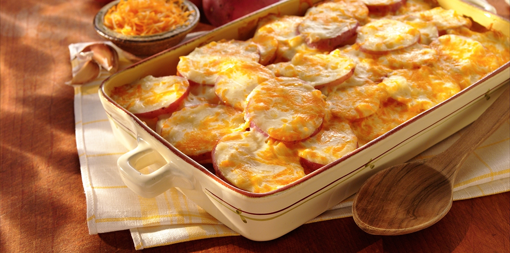

Cooking
easy and fun
About us
We are professionals in this area.
We are a group of young people for whom cooking is a hobby. Here you will find interesting recipes that are easy to prepare. Our goal is to save your time and show you that cooking can be both art and entertainment. The products used are healthy and low calorie. We've picked recipes from all over the world to experience other cultures and tastes. We are very keen to get feedback from you.
Best recipes of the week


New dishes



What chefs say

Chef Petrov
He has been working in the culinary sphere for 15 years. There are many international awards. He was declared chef of the year in France. His specialties are desserts.
Chef Nikilov
His prominence has long since left the borders of Bulgaria. It recommends vegetarianism as a healthy way of life. Cooked from his childhood for 21 years.
Chef Marinov
It has an interesting cooking style that combines Asian and Indian cuisine. He traveled for many years to Asia and collected his recipes from the local population.